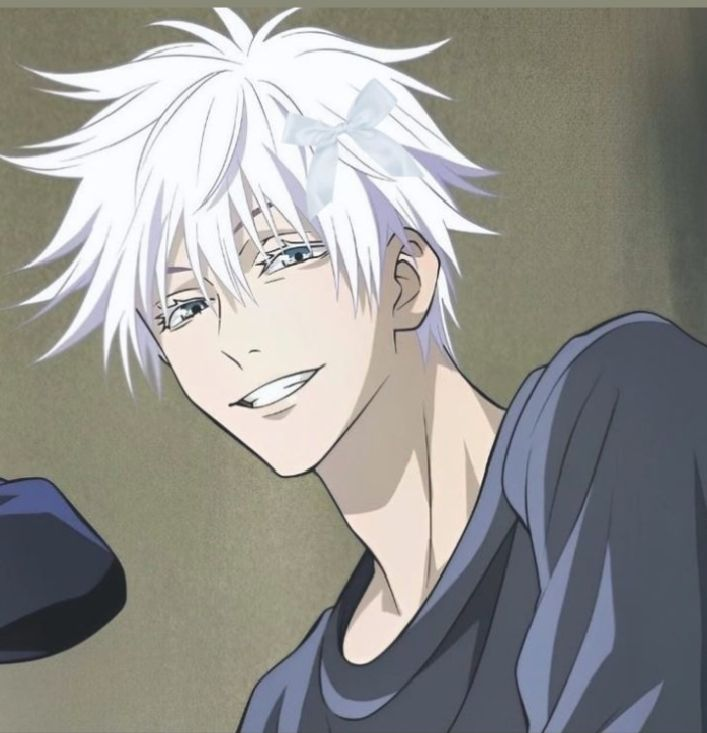
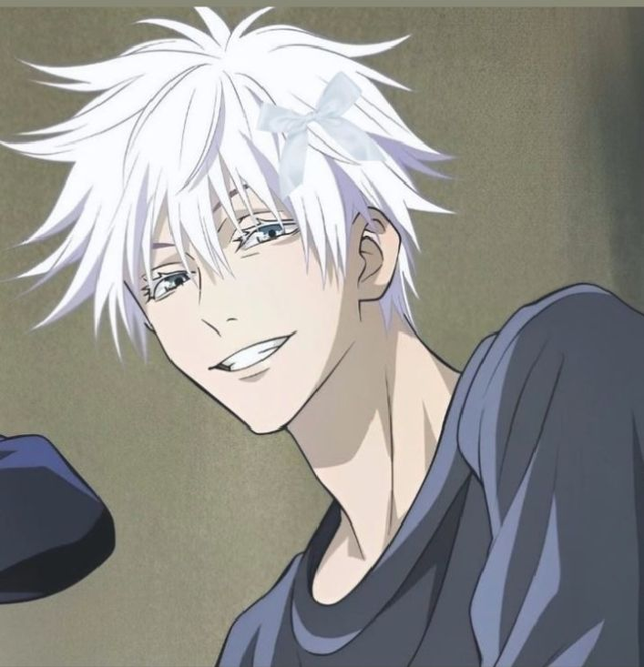

Overview
Full Name: Gojo Satoru (五条 悟)
Birthday: December 7
Age: 28
Occupation: Teacher at Tokyo Jujutsu High, Special Grade Jujutsu Sorcerer
Clan: Gojo Clan (one of the most powerful sorcerer clans)
Appearance: White hair, usually wears a blindfold or dark sunglasses, striking blue eyes (Six Eyes).
Role in Jujutsu Kaisen
- Mentor/Teacher: Trains main characters like Yuji Itadori, Megumi Fushiguro, and Nobara Kugisaki.
- Protector: Acts as a frontline fighter against curses and antagonists threatening humanity.
- Plot Driver: Many story arcs revolve around him due to his immense power and family background.
- Strategist: His actions and planning have major consequences for the sorcerer world.
Powers & Abilities
Gojo Satoru is considered the strongest Jujutsu Sorcerer, with abilities stemming from the Limitless Cursed Technique and the Six Eyes.
Six Eyes
- See cursed energy in minute detail.
- Reduce cursed energy consumption to nearly zero.
- Precisely analyze opponents’ techniques.
Limitless (Cursed Technique)
Manipulates space at an atomic level. Core techniques include:
- Infinity (Mugen): Creates an invisible barrier of infinite space, making him untouchable.
- Blue: Attractive force that pulls objects or people toward a target.
- Red: Repulsive force that pushes objects or enemies away violently.
- Hollow Purple: Combines Blue and Red to create a destructive beam that erases anything in its path.
- Domain Expansion – Unlimited Void: Overwhelms opponents with infinite information, paralyzing them.
Combat Skills
- Master-level hand-to-hand combat.
- Exceptional cursed energy control, can maintain powerful techniques with minimal energy.
- Highly tactical, evaluates opponents’ abilities and weaknesses mid-battle.
Notable Achievements
- Sealed in the Prison Realm during the Shibuya Incident.
- Defeated multiple high-level curses and antagonists single-handedly.
- Trains the new generation of sorcerers, shaping the future of the Jujutsu world.
Fun Facts
- Loves sweets and snacks.
- Playful and teasing, but extremely strategic in combat.
- Known for being cocky, confident, and charismatic.
- One of the most visually impressive characters in the anime.